Patrimonio UNESCO
Trulli di Alberobello
Oltre 1500 costruzioni in pietra a secco con tetti conici decorati da simboli misteriosi. Rioni storici Monti e Aia Piccola e il celebre Trullo Sovrano a due piani.
La Puglia ha 4 siti UNESCO, cattedrali romaniche tra le piu belle d'Europa, borghi bianchi dell'entroterra e una stratificazione storica che va dalla Magna Grecia al barocco del Seicento. Ogni borgo ha una storia da raccontare.
Oltre 1500 costruzioni in pietra a secco con tetti conici decorati da simboli misteriosi. Rioni storici Monti e Aia Piccola e il celebre Trullo Sovrano a due piani.

La leggendaria fortezza ottagonale fatta erigere da Federico II di Svevia nel XIII secolo. Un capolavoro di precisione matematica, astronomia e architettura gotico-romanica.
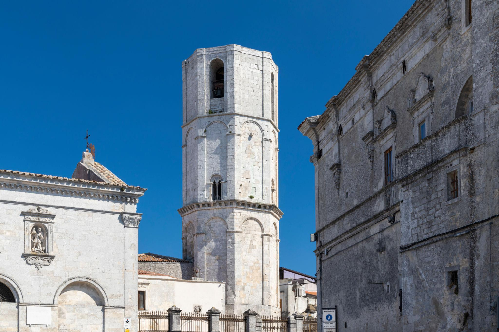
Il più antico e celebre santuario dell'Occidente dedicato all'Arcangelo Michele, scavato nella roccia del Gargano. Meta di pellegrini, imperatori e papi per oltre 1500 anni.
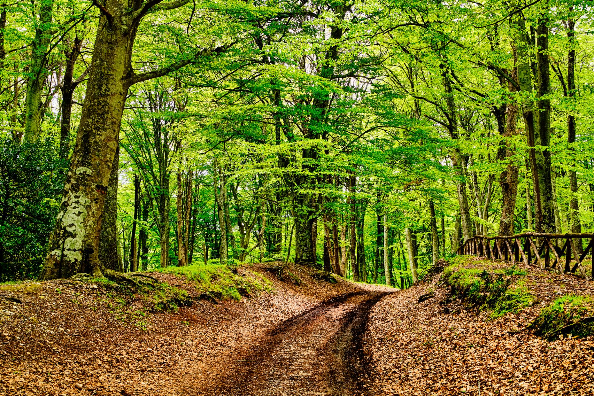
Le antiche e maestose faggete vetuste del Parco Nazionale del Gargano, riconosciute dall'UNESCO come patrimonio naturale dell'umanità per la loro biodiversità ed eccezionale conservazione.
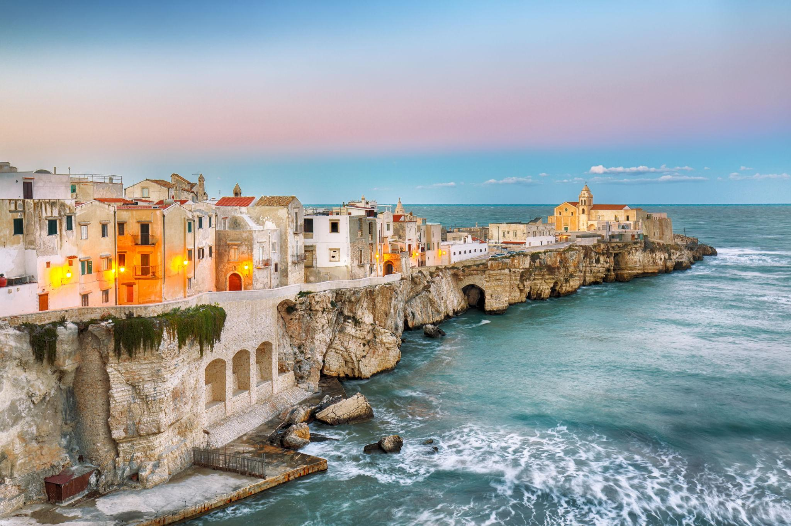
La perla del Gargano, arroccata su un doppio promontorio calcareo. Il suo centro storico è caratterizzato da vicoli ripidi, una cattedrale romanica e il leggendario monolite bianco di Pizzomunno.
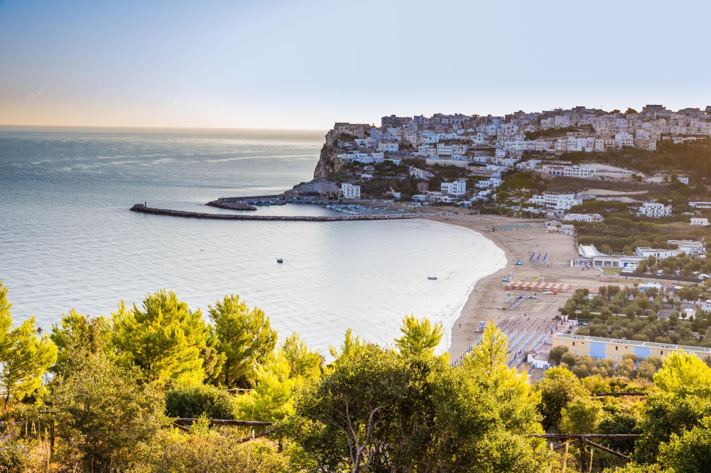
Arroccata su una rupe a picco sul mare, Peschici affascina con le sue caratteristiche case bianche con tetti a cupola e i secolari trabucchi storici in legno usati per la pesca.
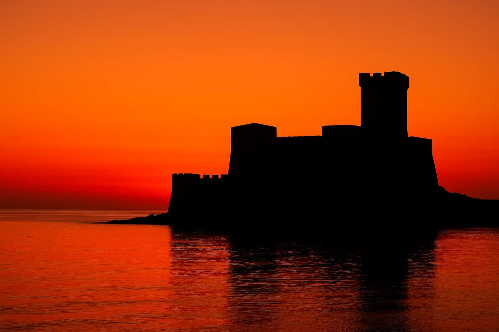
Antica e nobile città della Capitanata con un grandioso anfiteatro romano e la maestosa fortezza svevo-angioina eretta da Federico II come colonia per i suoi arcieri saraceni.
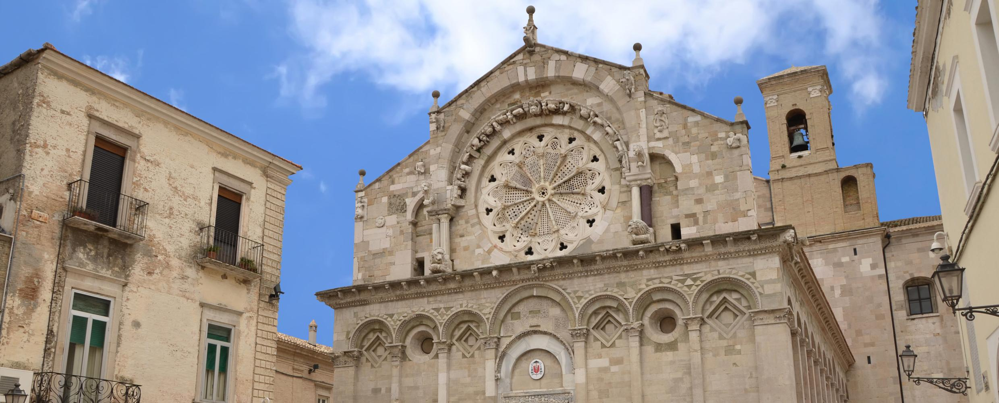
Piccolo tesoro sui colli Dauni, celebre per la sua straordinaria Cattedrale romanica risalente all'XI secolo, che sfoggia un rosone a undici raggi in pietra intagliata unico al mondo.
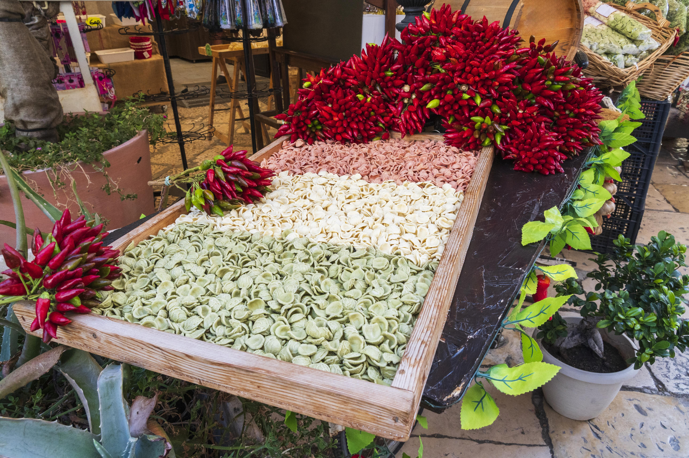
Il quartiere antico, labirinto di vicoli animati dove le signore preparano a mano le celebri orecchiette all'Arco Basso e svetta la magnifica Basilica romanica di San Nicola.
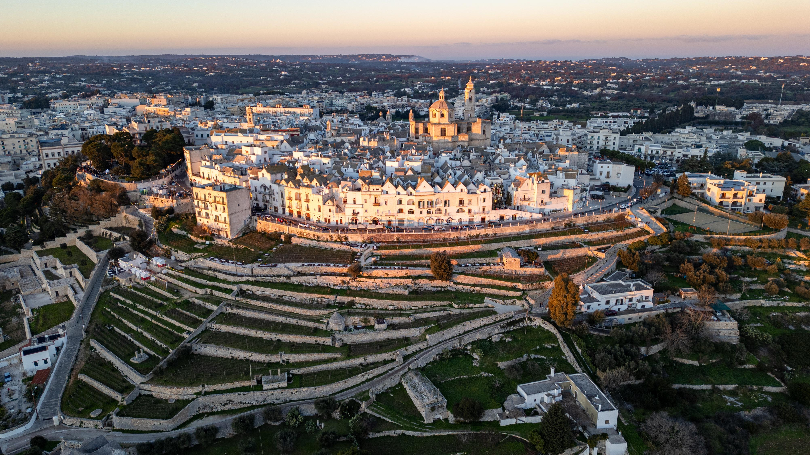
Un borgo bianco a pianta perfettamente circolare in cima a un colle della Valle d'Itria. Celebre per le "cummerse" (case con tetti spioventi in pietra) e per la produzione di vino DOC.
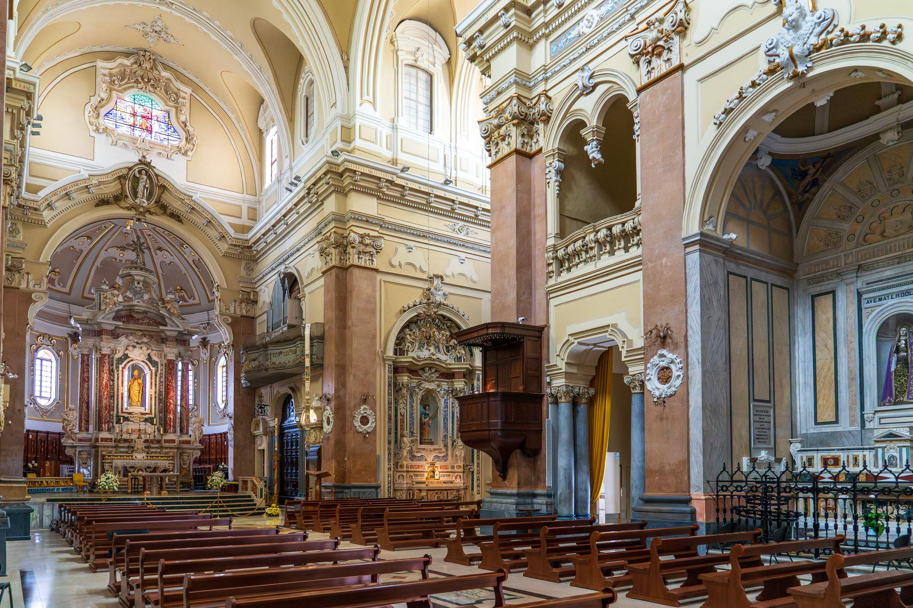
La capitale del barocco nella Valle d'Itria. Un'elegante alternanza di vicoli candidi, sfarzosi portali in pietra, il maestoso Palazzo Ducale del XVII secolo e le piazze scenografiche.
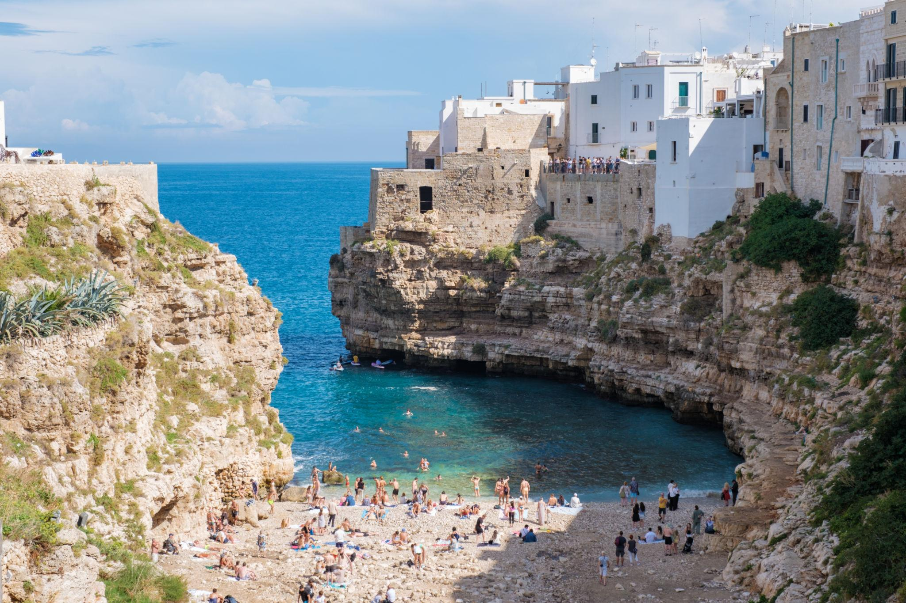
Il borgo sospeso tra cielo e mare, edificato su terrazze calcaree che si affacciano a strapiombo sul blu cristallino dell'Adriatico. Luogo di nascita di Domenico Modugno.
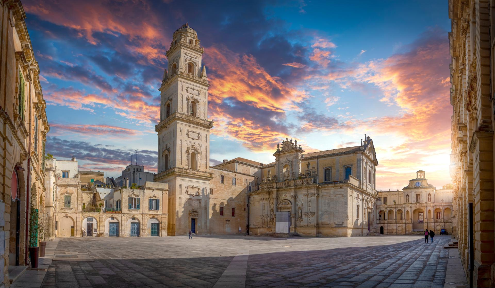
La "Firenze del Sud". Un museo barocco diffuso scolpito nella tenera pietra leccese dorata. La favolosa Basilica di Santa Croce e la monumentale Piazza del Duomo tolgono il fiato.
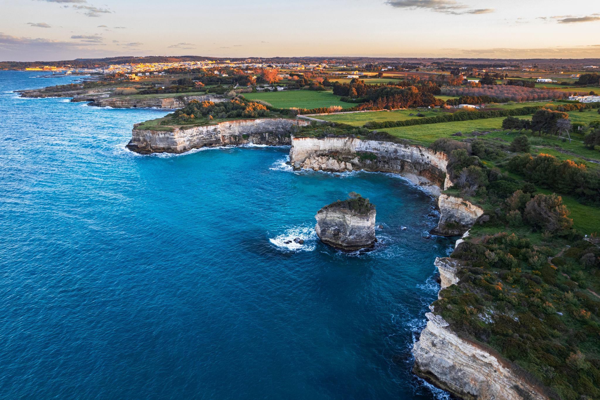
Il punto più a est d'Italia. Culla bizantina protetta da maestose mura fortificate e dal castello aragonese. Conserva la Cattedrale con il colossale mosaico medievale dell'Albero della Vita.
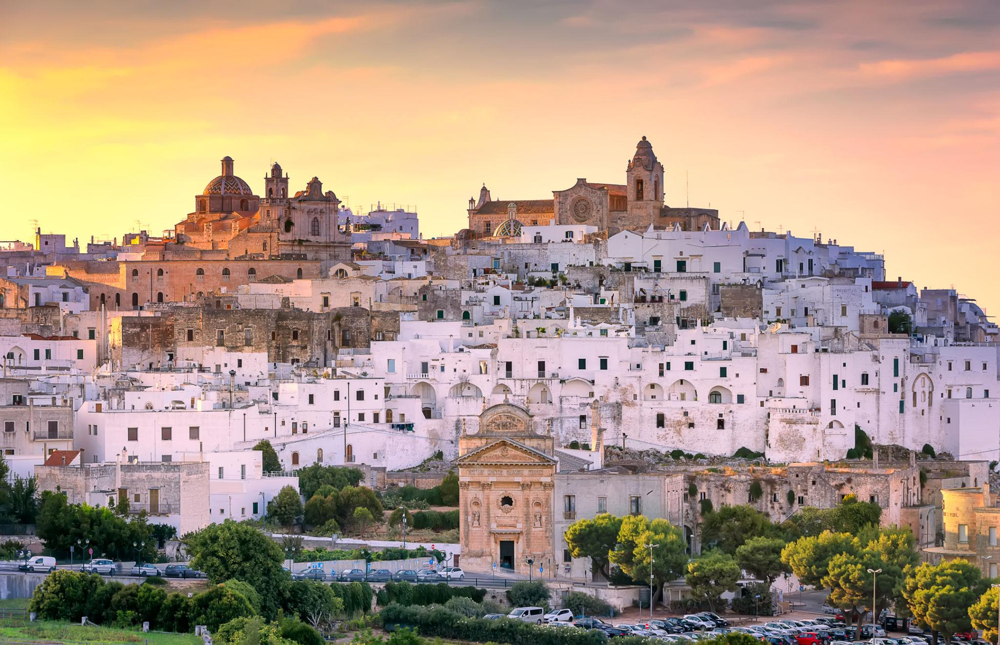
Una spettacolare acropoli bianca che risplende arroccata su tre colli, dipinta a calce da secoli. Dalla sua imponente cattedrale gotica si gode un panorama sterminato di ulivi millenari che digradano fino al mare.
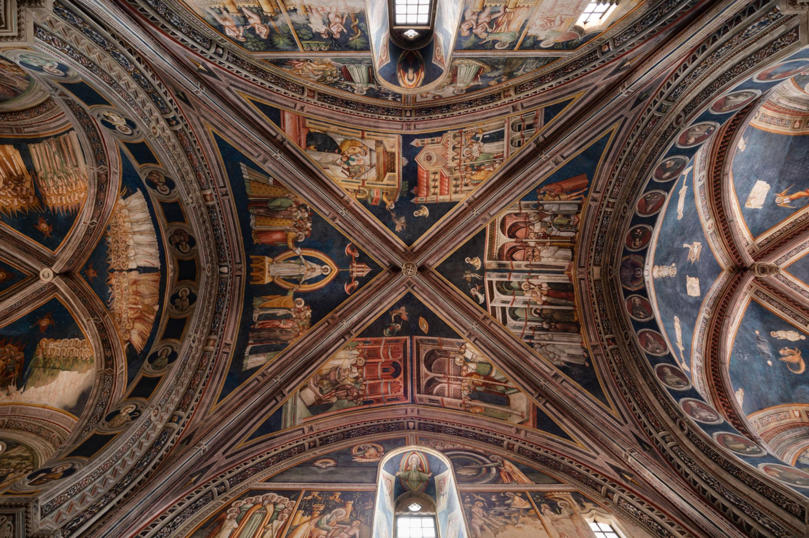
Scrigno d'arte del Salento interno, celebre per la Basilica di Santa Caterina d'Alessandria, i cui interni sono interamente ricoperti da cicli di spettacolari affreschi gotici di scuola giottesca.